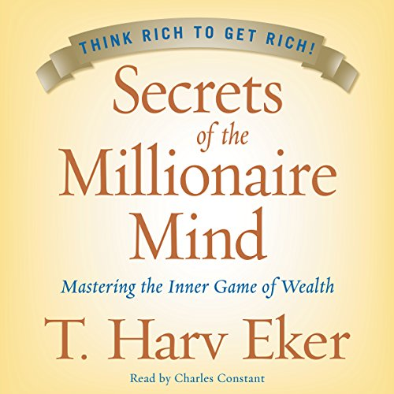

Library › Money & Finance
Secrets of the Millionaire Mind — Summary & Key Lessons

Mastering the inner game of wealth — your financial blueprint was set in childhood, and it's running your bank account.
📖 OPEN THE FULL INTERACTIVE BREAKDOWN →🌐 Read it in Hindi, Hinglish, Gujarati, Tamil & 22 more languages — free, with audio.
💡 The Big Idea
Eker's premise: everyone carries a MONEY BLUEPRINT — a subconscious thermostat set in childhood through verbal programming ('money doesn't grow on trees', 'rich people are greedy'), modeling (how your parents handled money), and specific emotional incidents — and the blueprint trumps everything: knowledge, opportunity, even windfalls (lottery winners revert to their setting; self-made millionaires who lose everything rebuild to theirs). Part one is the rewiring protocol: awareness (trace the file), understanding (see its cost), disassociation (it's a learned program, not you), and reconditioning (declarations + new behaviors). Part two delivers the seventeen WEALTH FILES — paired contrasts between rich and poor/middle-class thinking: rich people believe 'I create my life' (vs 'life happens to me'), play to WIN (vs playing not-to-lose), commit to being rich, think big, admire the wealthy, get paid on RESULTS (vs time), manage money religiously, and act in spite of fear. The management system: six jars — because how you handle $100 predicts how you'd handle $100,000.
🧠 The 6 Key Lessons
Lesson 1: Your Money Blueprint: The Thermostat Behind the Bank Account
Part 1: Your Money Blueprint
The core mechanism: your financial results hover around an internal SETTING the way room temperature tracks a thermostat — earn beyond it and subconscious sabotage (overspending, bad deals, 'bad luck') restores the setting; that's why skills-only financial education fails. The blueprint's three installers: VERBAL PROGRAMMING (every money phrase overheard before age ~13 — 'we can't afford it', 'money is the root of all evil', 'the rich get richer' — filed as operating truth), MODELING (you unconsciously replicate OR violently oppose your parents' money patterns — both are the blueprint running: the spender's child who becomes a miser is equally programmed), and SPECIFIC INCIDENTS (the fight about bills, the humiliation at the shop — single emotional events that fused money with fear, shame, or conflict). The rewiring protocol Eker drills: AWARENESS (write the phrases, patterns, incidents), UNDERSTANDING (trace each to its current cost), DISASSOCIATION ('this is a file I inherited, not who I am'), and RECONDITIONING — declarations spoken aloud with a hand on the heart ('I have a millionaire mind'), plus immediate contrary ACTIONS, because files rewrite through behavior, not affirmation alone.
📖 Example: Eker's signature case is his own: multiple failed businesses despite hustle and knowledge — until he confronted the inherited file (immigrant parents' scarcity, money = struggle), reset the blueprint, and built a chain from zero to millions in two and a half… Read the full example →
⚡ Do this: Run the excavation tonight: write (1) five money phrases you heard growing up, (2) your parents' money pattern and whether you copy or oppose it, (3) one emotional money incident. Beside each: its current monthly cost. Then begin the swap: one declaration + one contrary action (invest the amount, make the ask, open the account) within 48 hours.
Lesson 2: Play to Win: The Files That Set Your Ceiling
Wealth Files 1–8
The first files rewire ambition itself. FILE 1 — 'I create my life' vs 'life happens to me': victims run three identifiable patterns (blame, justification, complaining — and Eker's rule: 'when you're complaining, you become a living, breathing crap magnet'); wealth requires firing all three. FILE 2 — play to WIN vs not-to-lose: the poor/middle-class money goal is security (enough to survive, bills paid); the rich goal is abundance (wealth built, options owned) — and you get, at best, what you AIM for: 'if you shoot for the stars, you'll at least hit the moon; shoot for your ceiling and you'll hit the floor.' FILES 3-5 — commit fully ('wanting' is passive; commitment means doing whatever it takes within integrity), think BIG (your income is proportional to the size of the problem you solve — the Law of Income: value delivered × leverage), and focus on OPPORTUNITIES where the untrained eye sees only obstacles (both are always present; attention picks which one grows). FILES 6-8 — admire the rich rather than resent them (resenting what you seek is ordering your subconscious to never let you become it), associate with positive successful people (energy and standards are contagious), and PROMOTE yourself unapologetically — the file that makes most people flinch, which is exactly Eker's point: distaste for selling is a poverty file wearing a dignity costume.
📖 Example: The resentment file's demonstration is Eker's seminar staple: audiences asked their gut reaction to 'rich people' produce a torrent — greedy, lucky, corrupt — then face his question: 'how do you plan to become something you despise?' The subconscious, he… Read the full example →
⚡ Do this: Fire the victim trio for seven days: zero blame, justification, or complaint (rubber band on the wrist; snap and switch on every catch). Rewrite your money goal from security-speak ('enough to be comfortable') to win-speak (a number and date that excite you). And do one act of unapologetic self-promotion this week — the flinch is the file dissolving.
Lesson 3: Results, Not Time: The Files That Set Your Income Model
Wealth Files 9–14
The middle files attack the earning model. FILE 10 — rich people are excellent RECEIVERS: the poverty file says 'I'm not worthy' and deflects (compliments, gifts, opportunities, money — all fumbled); the practice is receiving fully and saying 'thank you' — to everything, without the deflection reflex. FILE 11 — get paid on RESULTS, not time: trading hours for money installs a hard ceiling (there are only so many hours); the wealthy tie income to outcomes — commissions, profits, royalties, equity, businesses — and Eker's challenge to the salaried: negotiate any results-based component you can, or build one on the side, because 'the ceiling isn't your boss; it's your billing model.' FILES 12-14 — think 'BOTH', not 'either/or' (money OR meaning, career OR family — the middle-class mind chooses; the millionaire mind engineers both), track NET WORTH, not working income (the full scoreboard: income + savings + investments + simplification — what you keep and grow, not what passes through), and MANAGE money religiously: the habit hierarchy where 'how you do anything is how you do everything' — managing small money badly forecasts managing big money badly, which is why the system starts today, at whatever amount exists.
📖 Example: The receiving file's seminar moment: Eker has audiences practice responding to compliments with a full 'thank you' — no deflection — and grown adults visibly struggle; the same reflex, he argues, quietly deflects raises, deals, and windfalls. The… Read the full example →
⚡ Do this: Practice receiving for a week: every compliment, favor, and rupee gets a clean 'thank you' — zero deflections. Then audit your billing model: what percentage of your income is results-based? Negotiate or build one results-linked stream this quarter (commission tier, freelance deliverable, product royalty). Start tracking net worth monthly — the real scoreboard.
Lesson 4: The Jars & Acting Despite Fear: The Files That Make It Stick
Wealth Files 14–17 & the Money Management System
The system file: divide every rupee of income across SIX JARS (accounts) — 10% FFA (Financial Freedom Account: invested, NEVER spent — the golden goose whose eggs you'll eventually live on), 10% LTSS (long-term savings for spending: big purchases), 10% EDUCATION (courses, books — the asset between your ears), 55% NECESSITIES, 10% PLAY (must be BLOWN monthly on pure enjoyment — the jar that makes the discipline sustainable; deprivation-only systems explode), and 5% GIVE. The percentages matter less than the HABIT: start with any income, even splitting pocket change — 'the habit is the message to the universe (and your subconscious) that you MANAGE money.' The closing files: rich people have their MONEY WORK HARD (assets: businesses, real estate, funds — the crossover goal: passive income exceeding expenses = freedom), and — the master file — ACT IN SPITE OF FEAR: comfort is wealth's cage ('nobody ever died of discomfort, but living in comfort has killed more ideas and opportunities than everything else combined'); the practice is deliberately doing what's uncomfortable until the comfort zone equals the wealth zone. Training the mind, Eker closes, is the whole game — 'if you want to change the fruits, change the roots.'
📖 Example: The jars' fame comes from its floor: Eker insists broke students start by splitting literal pocket change across six containers — and his testimonials trace the arc: the ritual at ₹100/month scale building the identity that later managed lakhs identically;… Read the full example →
⚡ Do this: Open the six jars this payday (accounts or literal containers): 10/10/10/55/10/5 — at ANY income, including pocket change. Blow the play jar monthly without guilt; never touch the FFA. And schedule one comfort-zone breach weekly (the ask, the pitch, the price raise) — logged, because the discomfort ledger IS the growth ledger.
Lesson 5: The Envy Files: What You Envy Reveals What You're Not
Part 2: The Files
Eker's uncomfortable diagnostic: envy is a map of your own gaps. When you envy someone's wealth, health or freedom, you're not a bad person — you're receiving information about the file you haven't opened. The fix isn't to suppress the envy; it's to ask 'what exactly do they have that I want?' and then build a plan to develop it. Envy turned into curriculum becomes ambition; envy left as resentment becomes poison. The wealthy don't waste energy resenting others' wins — they study them. Your jealousy is the universe's way of showing you your own next level.
📖 Example: Eker tells of a client who envied a colleague's 'overnight' success — until he studied what she actually did: years of consistent skill-building and networking. The envy evaporated into a plan, and his own results followed the same path. Read the full example →
⚡ Do this: The next time you feel envy, write down precisely what the person has that you want — then list three actions that develop that exact quality in you.
Lesson 6: The 'Both' Mindset: You Can Have It All — If You Think So
Part 3: The Files
Eker's final wealth file: the rich think 'I can have both — money AND happiness, career AND family, freedom AND security'; the poor believe life is a zero-sum game where you must choose one. This either/or thinking is the real ceiling: it makes you stop trying the moment you have one thing, because you believe the other is off-limits. The both mindset is not denial of trade-offs — it is the refusal to accept limits that exist only in your head. When you believe both are possible, you become creative about finding both. Abundance is a decision before it is a result.
📖 Example: Eker describes two entrepreneurs with identical businesses: one believed 'you can't be rich and a good parent', so he capped his growth to protect his family time — and resented both; the other believed he could have both, built systems, and ended up with a… Read the full example →
⚡ Do this: Identify one area where you've been choosing 'either/or'. Rewrite it as 'and': 'I want success AND ___' — then take one action that serves both.
✅ 5-Step Action Plan
- Excavate the blueprint: phrases, models, incidents — and their monthly cost.
- Fire the victim trio; rewrite the goal from security to win.
- Receive cleanly for a week; build one results-based income stream.
- Open the six jars at any scale; blow the play jar monthly.
- One comfort-zone breach weekly — the roots change before the fruits.
⚠️ When This Doesn't Work
Eker's 'money blueprint' is genuinely useful — and it can become a licence for grandiosity. Harshad Mehta had the most powerful money blueprint in Indian history — he believed he was born to move markets — and the belief is exactly what let him rig the system until it broke, taking banks and small investors down with him. A money mindset without a risk governor is a fast car without brakes. Blueprint the belief, then blueprint the audit.
💀 The Graveyard Proves It
🐂 Harshad Mehta — The Big Bull Who Broke the Banks. Burn: ₹4,000+ crore scam. Read the full case study →
💬 Best Quotes from Secrets of the Millionaire Mind
- “Give me five minutes, and I can predict your financial future for the rest of your life.”
- “Rich people play the money game to win. Poor people play the money game to not lose.”
- “How you do anything is how you do everything.”
Interactive version: mark lessons as read, listen in your language, share quote cards.